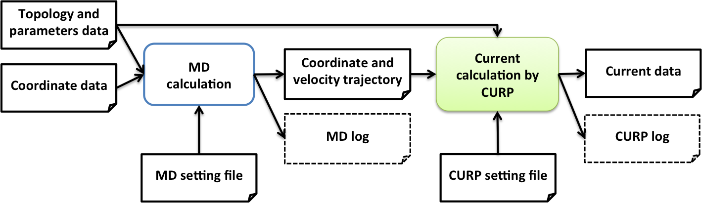

1. About CURP
1.1. What is CURP for?
CURrent calculation for Proteins (CURP) permits to compute energy/heat currents and atomic stress tensors(*) in a protein, given atomic coordinates and velocity trajectories obtained through molecular dynamics (MD).
(*) NOTE: CURP does not support atomic stress calculations on and after version 1.3.
1.2. Flow diagram of CURP calculations
The CURP program is designed for the analysis of (1) energy/heat current during vibrational energy relaxation and (2) atomic stress tensors or the flow of linear momenta in the thermally fluctuating protein media. The flowchart of the CURP calculation procedure is shown below.
{kind=link}

1.3. License
***************************************************************
CURrent calculation for Proteins (CURP)
version 3.0
Release date: Mar. 31, 2026.
COPYRIGHT Ⓒ 2012-2026.
Yamato Laboratory, Nagoya University. All rights reserved.
URL: https://www.curp.jp
Contact email: yamato@nagoya-u.jp
AUTHORS:
version 3.0
Takahisa YAMATO, Yoichi ARITA, Futa YOSHIMURA, Jo OBITSU
version 2.0
Takahisa YAMATO, Wataru SUGIURA, Olivier LAPRÉVOTE,
Tingting WANG, Shigure SAITO, Yoichi ARITA, Yudai OKUBO, Jo OBITSU
version 1.3
Takahisa Yamato, Olivier LAPRÉVOTE, Wataru SUGIURA,
Tingting WANG, Shigure SAITO
version 1.2
Takahisa YAMATO, Genki KUBOTA, Olivier LAPRÉVOTE
version 1.1
Takahisa YAMATO, Takakazu ISHIKURA, Kunitaka OTA,
Tatsuya SAKAI
version 1.0
Takahisa YAMATO, Takakazu ISHIKURA, Yuki IWATA
version 0.1
Takahisa YAMATO, Tatsuro HATANO, Takakazu ISHIKURA
TERMS and CONDITIONS:
Yamato Laboratory, Nagoya University (hereinafter referred to
as "Yamato Lab") has developed the computational tool for the
analysis of the following physical properties of proteins: (1)
the atomic stress tensor and (2) the vibrational energy flow.
The computational tool is referred to as "CURP" (CURrent
calculation for Proteins), which includes the set of programs
and the manuals. CURP is provided to a person who shall comply
with the following Terms and Conditions ("Person" here can be
an individual, an institution or a corporation and is
hereinafter referred to as the "user".).
The use of (A) CURP, (B) copied or modified CURP and (C) CURP
incorporated into another software by the user is permitted for
the user's own purposes. If the user wishes to use CURP for a
third party, the user should contact Yamato Lab directly in
advance.
PUBLICATION OF RESULTS
The user must indicate that CURP was used in the following
cases:
(1) when the user publishes a result obtained by using (A) CURP
(B) copied or modified CURP or (C) software incorporating CURP
(2) when the user publishes a modified part of CURP.
NO WARRANTY
CURP is provided as is, and Yamato Lab does not warrant or
guarantee the quality, performance, or any outcomes obtained by
running CURP for the user. The user agrees that the user
downloads, saves or uses CURP on user's own responsibility and
if any problem occurs through downloading, saving or using CURP,
the user shall be responsible for all consequences, including
compensation to any third party.
VIOLATION of the TERMS and CONDITIONS
If the user breaches the Terms and Conditions, CURP (including
copied or modified CURP) must be uninstalled from the user's
machine.
***************************************************************
1.4. Citation
Please cite the following references when you use the CURP program.
Compatibility with CMAP. Implementation of Irving-Kirkwood/treecode formalism.
Arita, F. Yoshimura, T. Yamato (to be submitted)
Heat current analysis
Yamato et al. “Computational study on the thermal conductivity of a protein”, J. Phys. Chem. B. 2022, 126: 3029–3036.
The main citation of the CURP program
T.Ishikura, Y.Iwata, T.Hatano and T.Yamato, “Energy exchange network of inter-residue interactions within a thermally fluctuating protein molecule: A computational study” J. Comput. Chem. 36:1709-1718 (2015).
Atomic stress tensor analysis
T.Ishikura, T.Hatano and T.Yamato, “Atomic stress tensor analysis of proteins”, Chem. Phys. Lett. 539:144-150 (2012).
Energy flow analysis of proteins
T.Yamato, “Energy flow pathways in photoactive yellow proteins”, in Proteins: energy, heat, and signal flow, eds. D.M. Leitner & J.E. Straub, pp. 129-147, (2009), Taylor and Francis.
T.Ishikura and T.Yamato, “Energy transfer pathways relevant for long-range intramolecular signaling of photosensory protein revealed by microscopic energy conductivity”, Chem. Phys. Lett. 432:533-537, (2006).
D.Leitner and T. Yamato, “Mapping energy transport networks in proteins” Rev. Comput. Chem. 31: 63-113 (2018).